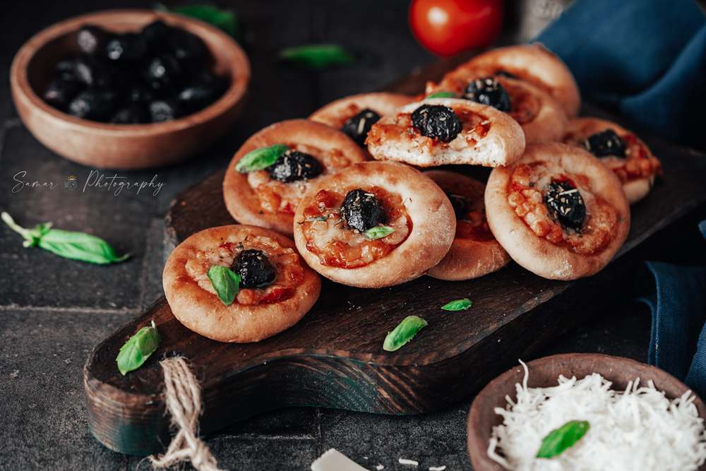

Karantita

Description
La mini pizza est très facile à réaliser, vous pouvez prendre votre pâte à pizza
préférée et la découper en disque, la piquer à l’aide d’une fourchette et la garnir.
Souvent, je reprends la pâte magique elle est excellente pour le pain, pizza et bien d’autres délices.
C’est une pâte rapide avec un temps de repos de 10 minutes qui a un franc succès.
Ingrédients
- 500g farine type T45
- 100g semoule fine
- 10g levure fraîche ou 3 gr levure sèche
- 3g sucre
- 3g sel
- 50ml huile d'olive
- 250ml eau tout dépendra de l'absorption de la farine
- 50ml eau tiède
Etapes
- Diluer la levure dans l'eau tiède (pas chaude).
- Dans le bol du pétrin, verser la farine, la semoule fine, le sel, le sucre ainsi que la levure diluée.
- Pétrir avec le crochet à petite vitesse jusqu’à homogénéité de la pâte.
- Ajouter l'huile d'olive en filet et mélanger.
- Fariner le fond d'un saladier, déposer la pâte et couvrir d'un torchon propre.
- Laisser lever la pâte environ 40 minutes ou jusqu’à ce qu'elle double de volume dans un endroit tiède à l'abri du courant d'air.
- Dégazer la pâte et l’étaler sur un plan de travail fariné. A l'aide d'un verre à eau découper des disque et déposer sur une plaque à pizza perfore ou une plaque allant au four.
- Recouvrir la surface de sauce tomate fromage et olive noire.
- Parsemer d'origan si désiré et enfourner environ 10 minutes à 200 C.